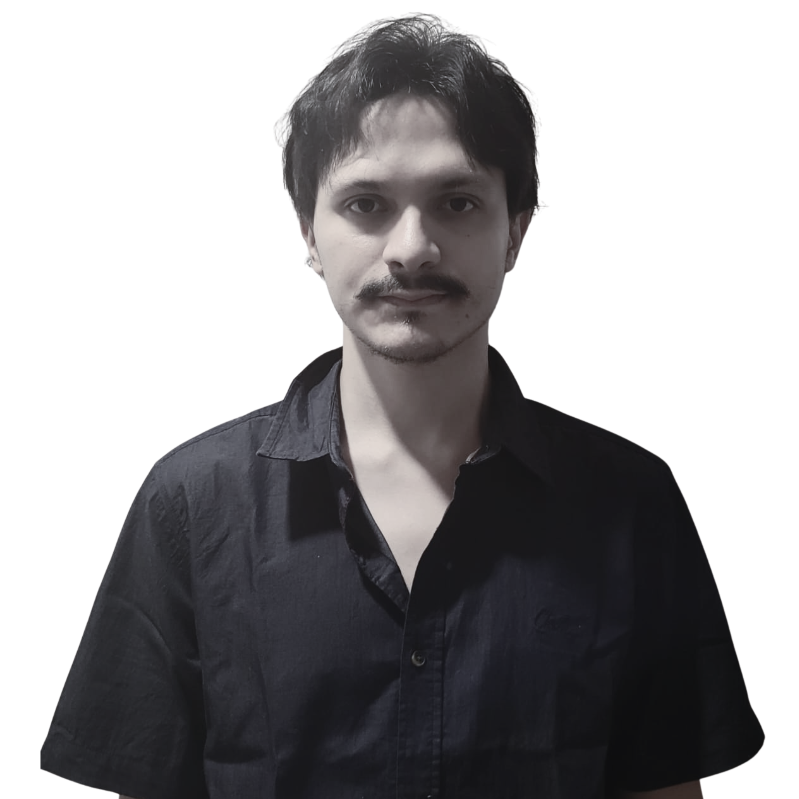

Profesional apasionado por la formación ciudadana y la investigación social. Con sólida experiencia en la facilitación de talleres pedagógicos y el liderazgo de proyectos comunitarios. Comprometido con la excelencia académica y el desarrollo creativo de nuevas generaciones.

Programa: "Niños Mediadores"
Impacto: Formación creativa y ciudadana en la primera infancia.
Área: Teoría política y análisis de la esfera pública colombiana.
Tema: "Estrategias comunicativas de movimientos sociales de mujeres (MAFAPO)".
Universidad de Medellín
(Egresado pendiente de título)
Universidad Nacional Autónoma de México (UNAM)
Intercambio especializado | 2023
Colegio Campestre el Remanso
Sabaneta, Antioquia | 2018
Instituto Mexicano de Curaduría y Restauración
Especialización en Museología Pedagógica | 2025
Certificado PDFInstituto Mexicano de Curaduría y Restauración
Análisis y Gestión de Espacios Culturales | 2025
Certificado PDFCasa Museo Tomás Carrasquilla
Formación en Mediación Cultural
Certificado PDFSabaneta, Antioquia, CO.
Coordinador Pregrado Ciencia Pol. - U. Medellín
350 8987440
pjurado@udemedellin.edu.co
Docente de Cátedra - Universidad de Medellín
317 8084003
Valoag3388@gmail.com